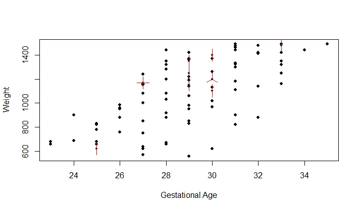
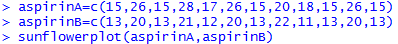
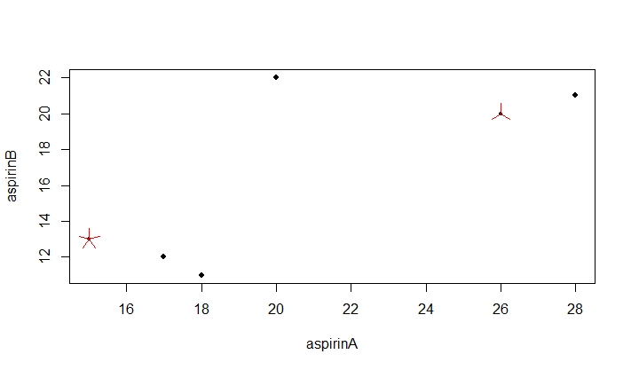

Learning Objective Two: Construct Sunflower graph
Introduction
A sunflower plot is similar to a scatter plot, but with showing the repeated points as sun flowers. In a sunflower plot, multiple overlapping points are plotted as sunflowers with multiples leaves (petals) with each leave (petal) representing one individual.
Knowledge
The R function for creating a sunflower plot is
sunflowerplot(x, y, cex= , size= , seg.col = , seg.lwd = )
x and y: numeric vectors of the data
cex: character size expansion of center points
size: size of sunflower petals in inches
seg.col: color to be used for the segments which make the sunflower petals
seg.lwd: the line width for the sunflower petal segments
An example of a sunflower plot is shown in figure 4. The graph is based on a data for 100 low birth weight infants, and it shows the relationship between the gestational age and birth weight. The horizontal axis shows the gestational age (in weeks), and vertical axis shows the birth weight (in grams) of the 100 infants. Each sun flower shown in red represents that there are multiple infants with the same gestational age and same birth weight. For example, the sun flower point at the gestational age of 27 weeks and weight of 1170 g indicates that there are four infants with the same gestational age of 27 weeks and same weight of 1170 grams.

Figure 4. A sunflower plot of relationship between gestational age and birth weight for 100 infants.
Key Points to Remember
Both a scatter plot and a sunflower plot are good to show the relationship between two quantitative variables. A regular scatter plot does not show the repeated individuals as those individuals overlap, but a sunflower plot shows the repeated individuals as different petals. The R function is sunflowerplot().
Practice and Reflection
Practice
Example 3: The following data shows two aspirin concentrations in urine samples of 10 patients at 1 hour. The 10 patients took Aspirin A first and had their urine samples taken, and then took Aspirin B and had their urine samples taken. The concentration of aspirin in urine samples is measured as mg%. Generate a sunflower plot to see the relationship between the urine samples from Aspirin A and Aspirin B.
| Aspirin A | 15 | 26 | 15 | 28 | 17 | 26 | 15 | 20 | 18 | 15 | 26 | 15 |
|---|---|---|---|---|---|---|---|---|---|---|---|---|
| Aspirin B | 13 | 20 | 13 | 21 | 12 | 20 | 13 | 22 | 11 | 13 | 20 | 13 |
The R code is

The sunflower plot is shown in figure 5.

Figure 5. Sunflower plot of relationship between the Aspirin A concentration and Aspirin B concentration.
We can see that there are five patients having the same Aspirin A concentrations at 15 mg% and the same Aspirin B concentrations at 13 mg%. There are three patients having the same Aspirin A concentration at 26 mg%, and the same Aspirin B concentration at 20mg%.
Reflection
Activity 2: Use the R data Orange to generate a sunflower plot to show the relationship between age and circumference of the orange trees. Make the data points blue, and the sunflower green. How many sunflowers do you observe? What data points are the sunflowers represent?
Assessment
Use the R dataset Orange. Generate a sunflower plot to show the relationship between age and circumference. How many repeated individuals did you see?